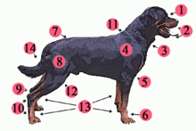
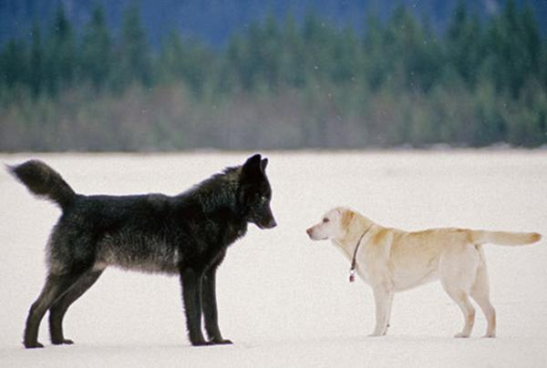
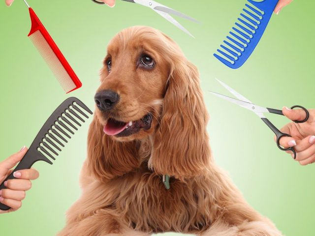

Los perros tienen un hocico alargado (en casi todas las razas) con dientes afilados. Tienen también grandes molares que contribuyen a una buena masticación.
Aunque ven bien, usan mayormente su oído y su olfato, sentidos que tienen muy desarrollados y que son muy prácticos para el humano. Tienen una cola larga que les da equilibrio al correr o andar, pero también les sirve para mostrar su estado de ánimo. Tienen una gran lengua que suelen sacar cuando están cansados o tienen calor, eso les ayuda a regular su temperatura corporal.
Estos animales suelen pesar entre 5 y 60 quilos, valor que varía en función de la raza. Tienen una temperatura corporal mayor que la nuestra, de 39 grados.
Una característica del perro doméstico es su capacidad para aprender lo que le enseñamos. Tienen una gran capacidad social con los de su misma especie y con las personas aunque, si viven en manadas, sobresaldrá el más fuerte, el macho alfa, porque entre ellos existe una jerarquía..
ÉSTAS SON LAS CARACTERISTICAS PRINCIPALES DE LOS PERROS:

CLASE:
Mamifero
LONGITUD :
Entre 15 y 100cm
Peso:
Entre 1,3 y 100 kg
Longevidad:
entre 9 y 20 años
Madurez:
Entre los 6 y 24 meses
Reproduccion:
Vivipara
Crias por parto:
Entre 2 y 12 crias
Gestacion:
58-68 dias
Edad del destete:
entre los 45-60 dias
Habitos:
Diurnos
Alimentacion:
Carnivora
DIFERENCIA ENTRE LOS LOBOS.

En comparación con lobos de tamaño equivalente, los perros tienden a tener el cráneo un 20 % más pequeño y el cerebro un 10 % más pequeño, además de tener los dientes relativamente más pequeños que otras especies de cánidos.
Los perros requieren menos calorías para vivir que los lobos. Su dieta de sobras de los humanos hizo que sus cerebros grandes y los músculos mandibulares utilizados en la caza dejaran de ser necesarios. Algunos expertos piensan que las orejas flácidas de los perros son el resultado de la atrofia de los músculos mandibulares.
La piel de los perros domésticos tiende a ser más gruesa que la de los lobos y algunas tribus esquimales prefieren su piel para vestirse, debido a su resistencia al desgaste en un clima inhóspito.
A diferencia de los lobos, pero al igual que los coyotes, los perros domésticos tienen glándulas sudoríparas en las almohadillas de las patas.
Las patas de un perro son aproximadamente la mitad de las de un lobo y su cola tiende a curvarse hacia arriba, otro rasgo que no se observa en los lobos.
PELAJE

Al igual que los lobos, los perros tienen un pelaje, una capa de pelos que los cubre el cuerpo. El pelaje de un perro puede ser un «pelaje doble», compuesto de una capa inferior suave y una capa superior basta. A diferencia de los lobos, los perros pueden tener un «pelaje único», carente de capa inferior. Los perros con un pelaje doble, como los lobos, están adaptados para sobrevivir en temperaturas frías y tienden a provenir de climas más fríos.
Los perros suelen presentar vestigios de contrasombreado, un patrón de camuflaje natural común.
La base general del contrasombreado es que un animal iluminado desde arriba aparece más claro en la mitad superior y más oscuro en la mitad inferior, donde normalmente tiene su propio color.
Este es un patrón que los predadores pueden aprender a reconocer. Un animal contrasombreado tiene una coloración oscura en la superficie superior y una coloración clara en la inferior.
Esto reduce la visibilidad general del animal. Un vestigio de este patrón es que muchas razas tienen un lado, una raya o una estrella de pelaje blanco en el pecho o en la parte inferior.